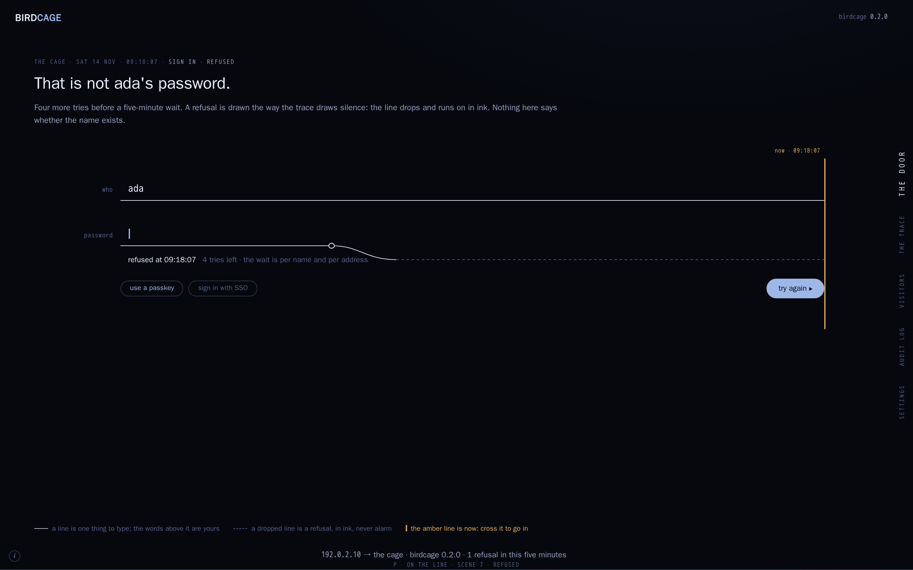
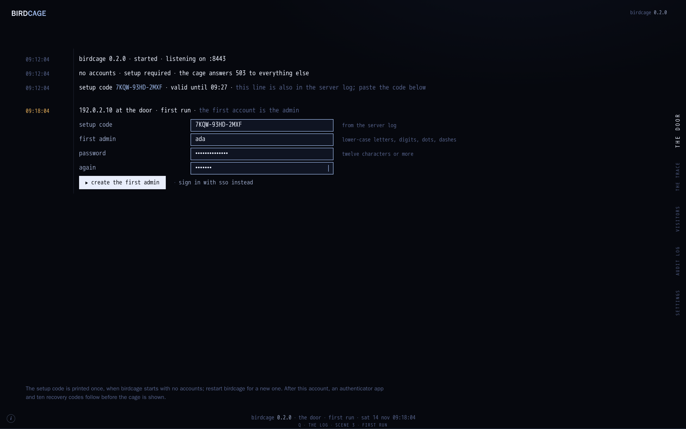
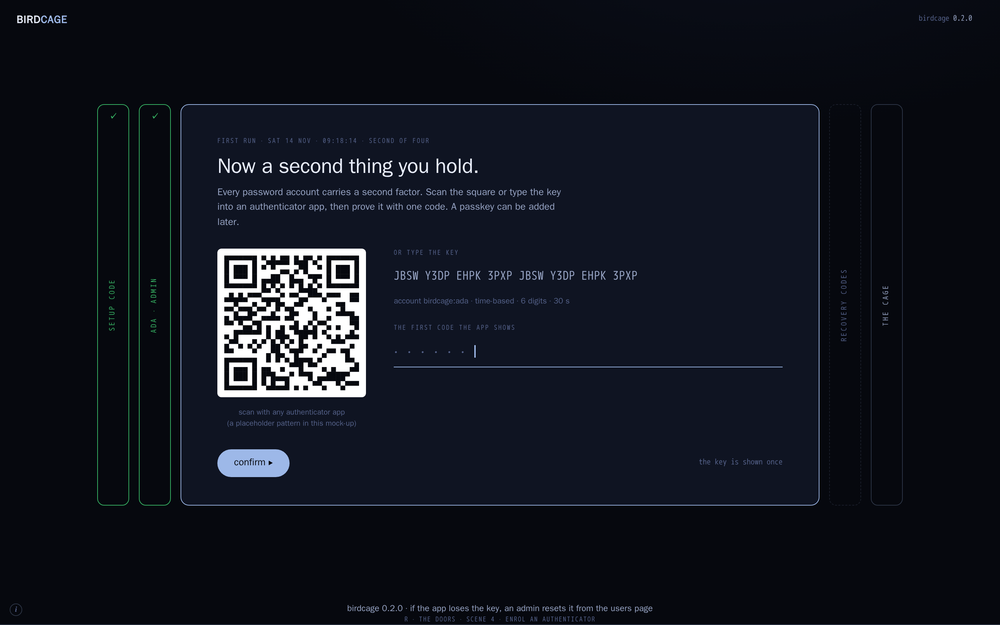

Sign-in through gauntlet (#8, slice B): three new ideas for the door to the ratified trace. Each page is one URL that scrolls through eight scenes: sign in, second factor, first run (the setup code from the server log), enrol an authenticator, recovery codes shown once, timed out over the dimmed dashboard, refused, and too many tries. Same data throughout: ada at the door from 192.0.2.10 on Sat 14 Nov, birdcage 0.2.0.
The form drawn with the trace's own marks: each field is a band line, your words sit above it, the amber brink is now, and a refusal is the line dropping to dashed ink.

direction-p-on-the-line.html ▸ scene 1 · sign in scene 2 · second factor scene 3 · first run scene 4 · enrol an authenticator scene 5 · recovery codes, shown once scene 6 · timed out scene 7 · refused scene 8 · too many triesThe door as a server-log transcript in mono: time in a gutter, one line per step, and on first run the setup-code line is the very line the admin just read in their terminal.

direction-q-the-log.html ▸ scene 1 · sign in scene 2 · second factor scene 3 · first run scene 4 · enrol an authenticator scene 5 · recovery codes, shown once scene 6 · timed out scene 7 · refused scene 8 · too many triesThe gauntlet as a corridor: the current step is one wide door, passed steps fold to ticked sideways spines on the left, steps ahead wait dashed on the right, the last always the cage.

direction-r-the-doors.html ▸ scene 1 · sign in scene 2 · second factor scene 3 · first run scene 4 · enrol an authenticator scene 5 · recovery codes, shown once scene 6 · timed out scene 7 · refused scene 8 · too many tries